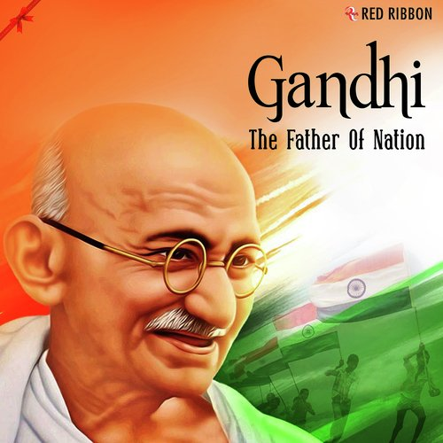

India's struggle for independence was marked by a series of pivotal events and tireless efforts by numerous leaders. Beginning with the First War of Independence in 1857, the movement gained momentum through the formation of the Indian National Congress and subsequent mass mobilizations. Key events included the Non-Cooperation Movement led by Mahatma Gandhi, the Quit India Movement of 1942, and revolutionary activities spearheaded by figures like Bhagat Singh and Subhas Chandra Bose. The culmination of these efforts led to the end of British colonial rule and the partition of India and Pakistan. August 15, 1947, stands as a monumental day, symbolizing the end of colonial oppression and the birth of a free, sovereign nation committed to democracy and justice.
Freedom Fighters
The Indian freedom movement was marked by the efforts of several key figures whose contributions shaped the path to independence.
Mahatma Gandhiled with his philosophy of non-violence and civil disobedience, orchestrating movements like the Salt March and the Quit India Movement to mobilize masses against British rule.
Bhagat Singh, known for his radical activism, became a symbol of revolutionary fervor through acts of defiance, including the bombing of the Central Legislative Assembly, and his commitment to armed struggle against colonial forces.
Begum Hazrat Mahal pursued independence through more militant means, forming the Indian National Army (INA) and seeking international support from Axis powers during World War II, reflecting his relentless drive for freedom.
Jawaharlal Nehru, as a prominent leader of the Indian National Congress and the first Prime Minister of independent India, played a pivotal role in shaping the new nation's democratic framework and economic policies.
Maulana Abul Kalam Azad, was a towering figure in Indian history, renowned as a scholar, journalist, and a stalwart leader of the Indian independence movement. Born Abul Kalam Ghulam Muhiyuddin in Mecca in 1888, he adopted the pen name 'Azad' (meaning 'free') reflecting his spirit..
Mahatma Gandhi

Bhagath Singh
Begum Hazrat Mahal
Jawaharlal Nehru

Maulana Abul kalam Azad